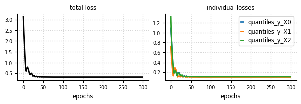
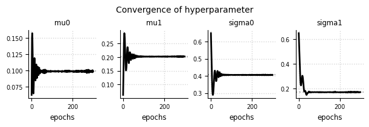
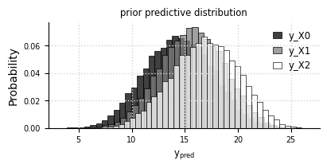
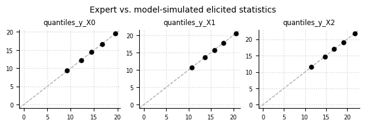
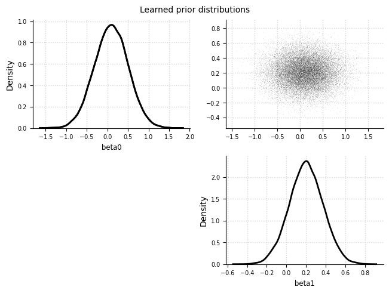
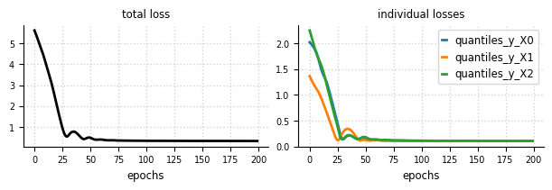
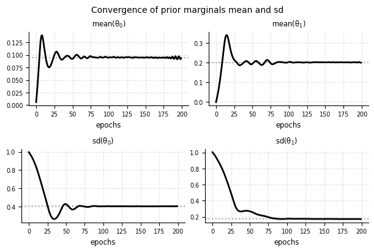
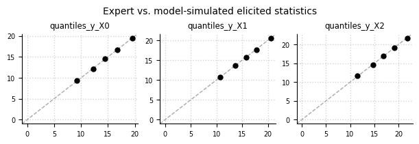
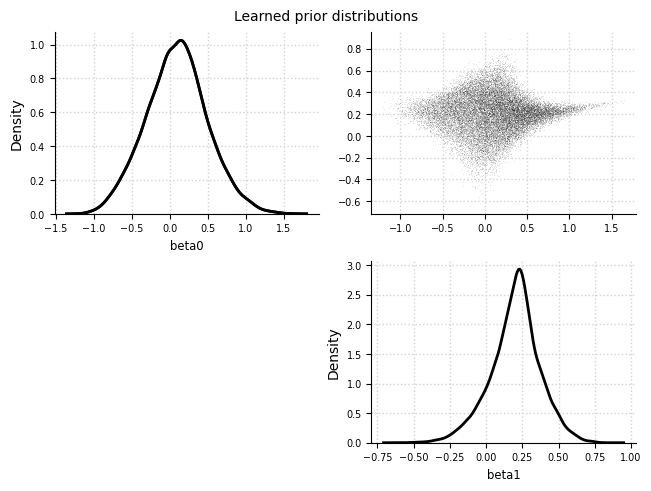

import tensorflow_probability as tfp
import tensorflow as tf
import numpy as np
import elicit as el
tfd = tfp.distributions
Use a discrete likelihood#
Gradients for discrete RVs#
Challenge#
ToDo (describe the problem of computing gradients for discrete RVs)
possible solution: softmax-gumble trick
Possible work around: Softmax-Gumble Trick#
Describe the softmax gumble trick
Example: Binomial model#
\[\begin{align*}
\beta_0 &\sim \text{Normal}(\mu_0, \sigma_0) &\text{priors}\\
\beta_1 &\sim \text{Normal}(\mu_1, \sigma_1) &\\
\mu &= \text{sigmoid}(\beta_0 + \beta_1X) &\text{link+linear predictor} \\
y_i &\sim \text{Binomial}(\mu, N) &\text{likelihood}
\end{align*}\]
using the
el.utils.softmax_gumble_trick()function in the generative model
help(el.utils.softmax_gumbel_trick)
Help on function softmax_gumbel_trick in module elicit.utils:
softmax_gumbel_trick(epred: tensorflow.python.framework.tensor.Tensor, likelihood: <built-in function callable>, upper_thres: float, temp: float = 1.6, **kwargs)
The softmax-gumbel trick computes a continuous approximation of ypred from
a discrete likelihood and thus allows for the computation of gradients for
discrete random variables.
Currently this approach is only implemented for models without upper
boundary (e.g., Poisson model).
Corresponding literature:
- Maddison, C. J., Mnih, A. & Teh, Y. W. The concrete distribution:
A continuous relaxation of
discrete random variables in International Conference on Learning
Representations (2017). https://doi.org/10.48550/arXiv.1611.00712
- Jang, E., Gu, S. & Poole, B. Categorical reparameterization with
gumbel-softmax in International Conference on Learning Representations
(2017). https://openreview.net/forum?id=rkE3y85ee.
- Joo, W., Kim, D., Shin, S. & Moon, I.-C. Generalized gumbel-softmax
gradient estimator for generic discrete random variables.
Preprint at https://doi.org/10.48550/arXiv.2003.01847 (2020).
Parameters
----------
epred : tf.Tensor
simulated linear predictor from the model simulations
likelihood : tfp.distributions object, shape = [B, num_samples, num_obs, 1]
likelihood function used in the generative model.
Must be a tfp.distributions object.
upper_thres : float
upper threshold at which the distribution of the outcome variable is
truncated. For double-bounded distribution (e.g. Binomial) this is
simply the "total count" information. Lower-bounded distribution
(e.g. Poisson) must be truncated to create an artificial
double-boundedness.
temp : float, temp > 0
temperature hyperparameter of softmax function. A temperature going
towards zero yields approximates a categorical distribution, while
a temperature >> 0 approximates a continuous distribution.
The default value is ``1.6``.
kwargs : any
additional keyword arguments including the seed information. **Note**:
the ``**kwargs`` argument is required in this function (!) as it
extracts internally the seed information.
Returns
-------
ypred : tf.Tensor
continuously approximated ypred from the discrete likelihood.
Raise
-----
ValueError
if rank of ``likelihood`` is not 4. The shape of the likelihood obj
must have an extra final dimension, i.e., (B, num_samples, num_obs, 1),
for the softmax-gumbel computation. Use for example
``tf.expand_dims(mu,-1)`` for expanding the batch-shape of the
likelihood.
if likelihood is not in tfp.distributions module. The likelihood
must be a tfp.distributions object.
KeyError
if ``**kwargs`` is not in function arguments. It is required to pass
the **kwargs argument as it is used for extracting internally
information about the seed.
The generative model#
class ToyModel:
def __call__(self, prior_samples, design_matrix, total_count, temp,
**kwargs):
B = prior_samples.shape[0]
S = prior_samples.shape[1]
# preprocess shape of design matrix
X = tf.broadcast_to(design_matrix[None, None,:],
(B,S,len(design_matrix)))
# linear predictor (= mu)
epred = tf.add(prior_samples[:, :, 0][:,:,None],
tf.multiply(prior_samples[:, :, 1][:,:,None], X)
)
# data-generating model
likelihood = tfd.Binomial(
total_count=total_count,
probs=tf.math.sigmoid(tf.expand_dims(epred,-1)))
# prior predictive distribution
ypred = el.utils.softmax_gumbel_trick(
epred, likelihood, total_count, temp, **kwargs)
# selected observations
y_X0, y_X1, y_X2 = (ypred[:,:,0], ypred[:,:,1], ypred[:,:,2])
return dict(y_X0=y_X0, y_X1=y_X1, y_X2=y_X2)
Construct the predictor#
# numeric, standardized predictor
def std_predictor(N, quantiles):
X = tf.cast(np.arange(N), tf.float32)
X_std = (X-tf.reduce_mean(X))/tf.math.reduce_std(X)
X_sel = tfp.stats.percentile(X_std, [int(p*100) for p in quantiles])
return X_sel
design_matrix = std_predictor(N=200, quantiles=[0.25, 0.50, 0.75])
design_matrix.numpy()
array([-0.85737586, 0.00866036, 0.85737586], dtype=float32)
Oracle as expert#
we simulate from a ground truth to obtain the expert data
\[\begin{align*}
\beta_0 &\sim \text{Normal}(0.1, 0.4)\\
\beta_1 &\sim \text{Normal}(0.2, 0.2)
\end{align*}\]
ground_truth = {
"beta0": tfd.Normal(loc=0.1, scale=0.4),
"beta1": tfd.Normal(loc=0.2, scale=0.2),
}
Parametric approach#
Specify the eliobj#
eliobj = el.Elicit(
model=el.model(
obj=ToyModel,
design_matrix=design_matrix,
total_count = 30,
temp = 1.6
),
parameters=[
el.parameter(
name="beta0",
family=tfd.Normal,
hyperparams=dict(
loc=el.hyper("mu0"),
scale=el.hyper("sigma0", lower=0)
)
),
el.parameter(
name="beta1",
family=tfd.Normal,
hyperparams=dict(
loc=el.hyper("mu1"),
scale=el.hyper("sigma1", lower=0)
)
)
],
targets=[
el.target(
name=f"y_X{i}",
query=el.queries.quantiles((.05, .25, .50, .75, .95)),
loss=el.losses.MMD2(kernel="energy"),
weight=1.0
) for i in range(3)
],
expert=el.expert.simulator(
ground_truth = ground_truth,
num_samples = 10_000
),
optimizer=el.optimizer(
optimizer=tf.keras.optimizers.Adam,
learning_rate=0.05,
clipnorm=1.0
),
trainer=el.trainer(
method="parametric_prior",
seed=0,
epochs=300
),
initializer=el.initializer(
method="sobol",
loss_quantile=0,
iterations=32,
distribution=el.initialization.uniform(
radius=1.,
mean=0.
)
)
)
Train the eliobj#
eliobj.fit()
Initialization
100%|██████████| 32/32 [00:11<00:00, 2.69it/s]
Training
100%|██████████| 300/300 [02:56<00:00, 1.70it/s]
Results#
Convergence - Loss#
el.plots.loss(eliobj, figsize=(6,2))

Convergence - Hyperparameter#
el.plots.hyperparameter(eliobj, figsize=(6,2))

Prior predictive distribution#
el.plots.priorpredictive(eliobj, figsize=(4,2))

Expert data (oracle) vs. simulated data#
el.plots.elicits(eliobj, cols=3, figsize=(6,2))

Learned prior distributions#
el.plots.priors(eliobj)

Non-parametric approach#
Specify the eliobj#
from bayesflow.inference_networks import InvertibleNetwork
eliobj2 = el.Elicit(
model=el.model(
obj=ToyModel,
design_matrix=design_matrix,
total_count = 30,
temp = 1.6
),
parameters=[
el.parameter(name="beta0"),
el.parameter(name="beta1")
],
targets=[
el.target(
name="y_X0",
query=el.queries.quantiles((.05, .25, .50, .75, .95)),
loss=el.losses.MMD2(kernel="energy"),
weight=1.0
),
el.target(
name="y_X1",
query=el.queries.quantiles((.05, .25, .50, .75, .95)),
loss=el.losses.MMD2(kernel="energy"),
weight=1.0
),
el.target(
name="y_X2",
query=el.queries.quantiles((.05, .25, .50, .75, .95)),
loss=el.losses.MMD2(kernel="energy"),
weight=1.0
)
],
expert=el.expert.simulator(
ground_truth = ground_truth,
num_samples = 10_000
),
optimizer=el.optimizer(
optimizer=tf.keras.optimizers.Adam,
learning_rate=0.001,
clipnorm=1.0
),
trainer=el.trainer(
method="deep_prior",
seed=0,
epochs=200
),
network=el.networks.NF(
inference_network=InvertibleNetwork,
network_specs=dict(
num_params=2,
num_coupling_layers=3,
coupling_design="affine",
coupling_settings={
"dropout": False,
"dense_args": {
"units": 128,
"activation": "relu",
"kernel_regularizer": None,
},
"num_dense": 2,
},
permutation="fixed"
),
base_distribution=el.networks.base_normal
)
)
Train the eliobj#
eliobj2.fit()
Training
100%|██████████| 200/200 [05:31<00:00, 1.66s/it]
Results#
Convergence - Loss#
el.plots.loss(eliobj2, figsize=(6,2))

Convergence - Marginals#
el.plots.marginals(eliobj2, cols=2, figsize=(6,4))

Prior predictive distribution#
el.plots.priorpredictive(eliobj2, figsize=(4,2))
---------------------------------------------------------------------------
KeyError Traceback (most recent call last)
Cell In[27], line 1
----> 1 el.plots.priorpredictive(eliobj2, figsize=(4,2))
File ~\Documents\GitHub\prior_elicitation\elicit\plots.py:706, in priorpredictive(eliobj, **kwargs)
704 B=eliobj.trainer["B"]
705 num_samples=eliobj.trainer["num_samples"]
--> 706 n_obs = eliobj.results["model_samples"]["ypred"].shape[-1]
708 pp_samples = tf.reshape(eliobj.results["model_samples"]["ypred"],
709 (B*num_samples,n_obs))
712 fig, axs = plt.subplots(1, 1, constrained_layout=True, **kwargs)
KeyError: 'ypred'
Expert data (oracle) vs. simulated data#
el.plots.elicits(eliobj2, cols=3, figsize=(6,2))

Learned prior distributions#
el.plots.priors(eliobj2)
